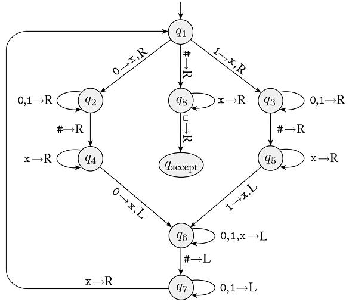

Homework 7
Last updated: Mon, 31 Oct 2022 13:31:31 -0400
Out: Mon Oct 31, 00:00 EST Due: Sun Mon Nov 07, 23:59 EST (Note the one extra day)
This assignment begins to explore Turing Machines and the languages they recognize.
Homework Problems
Turing Machine Computation (9 points)
Closed Operations For Regular Languages, One Last Time (9 points)
A Closed Operation For Turing-Recognizable Languages (11 points)
Another Closed Operation For Turing-Recognizable Languages, Maybe? (10 points)
README (1 point)
Total: 40 points
Submitting
Submit your solution to this assignment in Gradescope hw7. Please assign each page to the correct problem and make sure your solutions are legible.
A submission must also include a README containing the required information.
1 Turing Machine Computation
Here is a Turing Machine state diagram from class (Figure 3.10 in the Sipser Textbook):

Remember that from each state, there are implicit transitions to an implicit q_{reject} state, for any alphabet characters that are not explicitly shown. Also, if a transition omits the "write" character, then the tape contents stay the same (i.e., it "writes" the same character that was there).
Using this machine, answer the following questions (if your answer includes TM configurations, they must be the textual representation of a configuration).
What is the start configuration of this machine for an input string with characters w_1\cdots w_n.
Give two concrete strings accepted by this TM. Then, for each string, give a sequence of configurations that starts in the start configuration and ends in a configuration containing q_{accept}. The two sequences of configurations that you submit must together use every (shown) transition in the machine.
Give two concrete strings rejected by this TM. For each string, given a sequence of configurations that starts in the start configuration and ends in a configuration containing q_{reject}.
If a Turing Machine does not accept a string, is the only possible outcome to end in a configuration containing q_{reject}?
2 Closed Operations For Regular Languages, One Last Time
Define the following operation, called \mathrm{OP3}, on languages:
\mathrm{OP3}(A,B,C)=\{w\mid w \in B \textrm{ and }w \in C\}
Prove that \mathrm{OP3} is closed for regular languages by answering the following:
Give the If-Then statement that must be proved.
Prove it by giving a table of Statements and Justifications, where the last statement is the If-Then statement to be proved from above.
3 A Closed Operation For Turing-Recognizable Languages
Prove that the \mathrm{OP3} operation (from the Closed Operations For Regular Languages, One Last Time problem above) is closed for Turing-recognizable languages by answering the following:
Give the If-Then statement that would have to be proved.
Prove it by giving a table of Statements and Justifications, where the last statement is the If-Then statement to be proved from above.
If your answer involves constructing a TM that calls (an)other TM(s), create a table of possible TM outcomes, like the ones from lecture, that show all possible combinations of results from all of the Turing machines involved in your answer. (You may use "Any" in a table cell if it would be convenient to combine some rows.)
- Briefly discuss:
which rows of your table describe the accepting cases for the constructed TM
which rows of your table result infinite loops (if any), and why this is acceptable
4 Another Closed Operation For Turing-Recognizable Languages, Maybe?
Say we want to prove that the \mathrm{OP2} operation (from the Practice: Proving An Operation Closed For Regular Languages problem in Homework 3) is closed for Turing-recognizable languages. Answer the following:
Give the If-Then statement that must be proved.
Sketch out a potential proof by giving a table of Statements and Justifications, where the last statement is the If-Then statement to be proved from above.
If your proof requires constructing a TM that calls (an)other TM(s), you don’t need to give an actual construction. Instead, create a table of possible TM outcomes, like the ones from lecture, that show all possible combinations of results from all of the Turing machines involved in your answer.
Based on what you have done so far, comment on what kind of computation would be required to complete the proof, and why the \mathrm{OP2} operation might not be closed for Turing-recognizable languages.